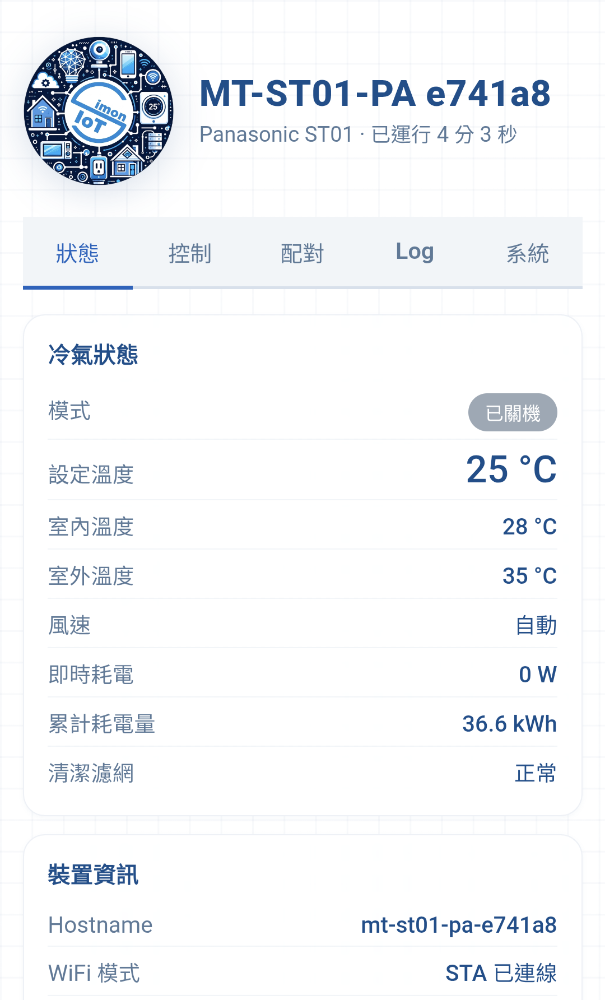
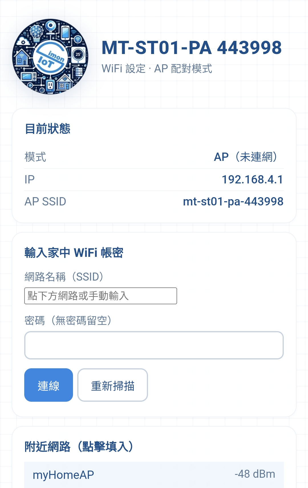
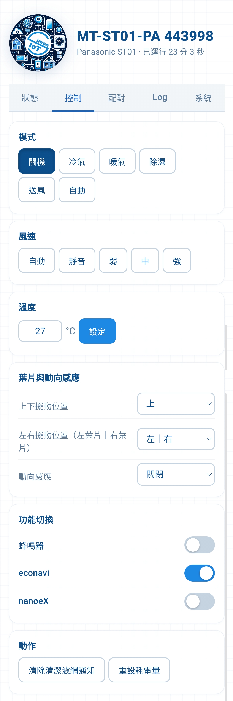
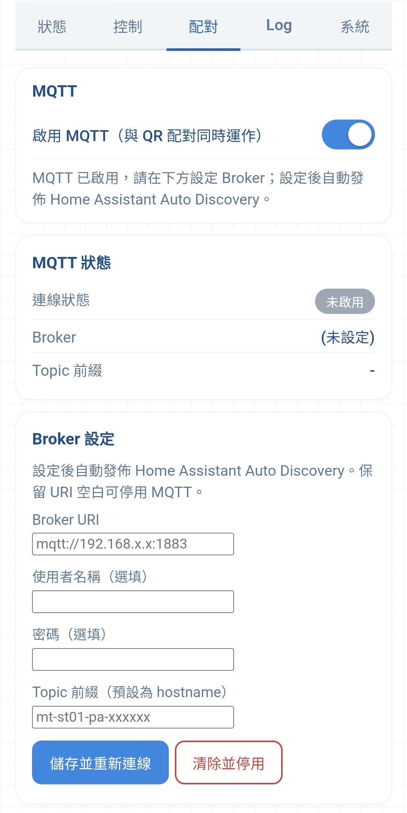
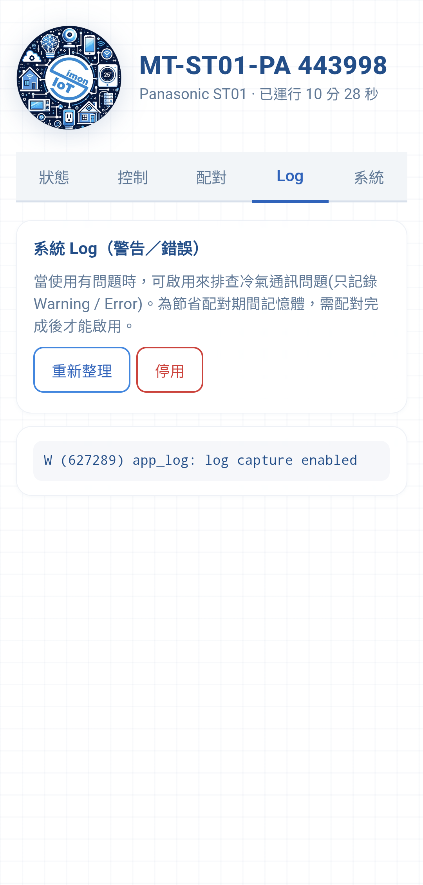
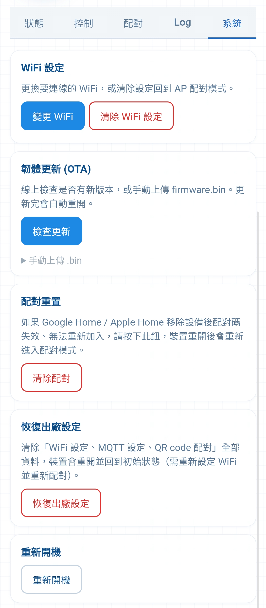
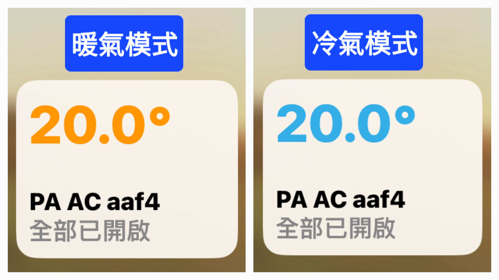
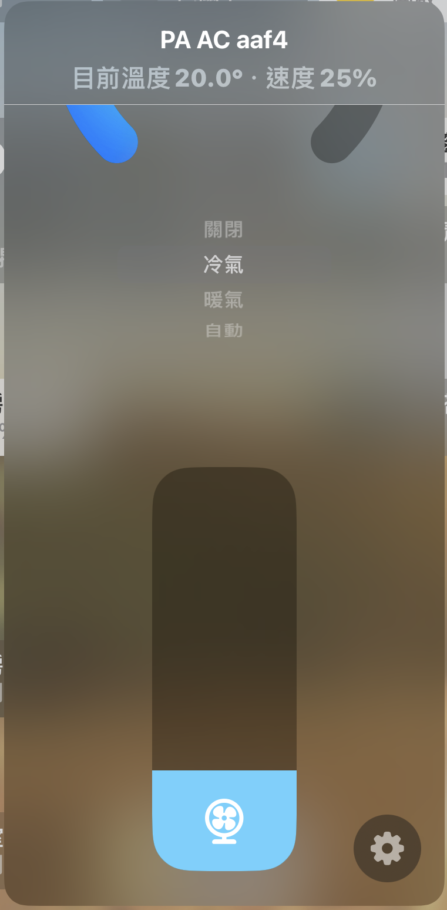

上機前務必確認插對地方！
如因插錯腳座造成模組或電器損壞恕不負責。建議先用 USB 上電測試，確認可連網與配對後，再安裝到電器上。
本模組純跑 WiFi，無需雲端、無需橋接器，可直接被 Google Home、Apple 家庭、Home Assistant 掃 QR code 加入控制。
若想在 Home Assistant 取得更完整的狀態資訊與更多可控項目，可在完成 QR code 配對後，於「配對」分頁加開 MQTT 併行接入（選用，需自備 MQTT broker）；QR code 配對與 MQTT 可同時使用。
目前支援以下廠牌空調：
- 國際 (Panasonic)
- 日立 (Hitachi)
- 大金 (Daikin)
- 三菱重工 (Mitsubishi Heavy Industries)
- 三菱電機 (Mitsubishi Electric)
除了平台配對外，模組本身內建一個網頁控制台，連上家中 Wi-Fi 後，直接在瀏覽器開啟裝置 IP 即可不經雲端、區網直接控制，並查看冷氣即時狀態。

可控制的功能
- 電源開關
- 模式：冷氣／暖氣／除濕／送風／自動
- 設定溫度
- 風速：Auto 自動 + 各廠牌支援的數段（靜音／弱／中／強…）
- 防霉乾燥：冷氣／除濕運轉關機後自動送風吹乾室內機（可開關、送風時間可調）
- 各廠牌專屬功能（依機型而異）：上下／左右葉片擺動位置、動向感應，以及如國際的 econavi、nanoeX、蜂鳴器、三菱電機的 i-See 等
從 Google Home／Apple 家庭調整溫度、模式等，網頁控制台也會即時同步顯示；反之亦然。
請先透過 USB 測試連線！
先插上 USB 電源，確認模組可成功連上家中網路並完成配對後，再安裝到電器上。
-
開啟 Wi-Fi 熱點：
從模組的 USB-C 孔上電，若約 60 秒內沒有連上已設定的 Wi-Fi，模組會自動建立一個 Wi-Fi 熱點（全新或清除設定後也會直接進入此模式）。
-
辨識並連上熱點：
熱點名稱為
mt-st01-<廠牌>-XXXXXX（XXXXXX 為 MAC 末六碼），開放無密碼，依廠牌：- 國際：
mt-st01-pa - 日立：
mt-st01-ht - 大金：
mt-st01-dk - 三菱重工：
mt-st01-mhi - 三菱電機：
mt-st01-mt
- 國際：
-
進入設定頁：
手機連上熱點後通常會自動跳出設定頁；若沒有，請開瀏覽器輸入 192.168.4.1。

-
設定家中 Wi-Fi：
在「附近網路」點選您家中的 2.4GHz Wi-Fi（或手動輸入名稱），輸入密碼後按下 連線。
-
查詢模組的內網 IP：
連上家中 Wi-Fi 後，請登入您家中路由器的裝置清單，找到主機名稱為
mt-st01-<廠牌>-XXXXXX的裝置，記下它取得的 IP 位址。把手機切回家中 Wi-Fi，於瀏覽器開啟該 IP，即可進入控制台。 -
加入智慧家庭平台（掃 QR code）：
在控制台切換到「配對」分頁，會看到 QR code 與 11 碼配對碼。打開 Google Home／Apple 家庭／Home Assistant，新增裝置並掃描此 QR code（或手動輸入配對碼）即可完成。
小提醒：若配對遲遲無法成功，請將模組重新上電，再回配對分頁確認配對碼後重試。
在瀏覽器開啟裝置 IP 後，控制台分為 狀態、控制、配對、Log、系統 五個分頁。
狀態
顯示冷氣即時狀態：運轉模式、設定／室內／室外溫度、風速、即時與累計耗電量、清潔濾網提示。下方「裝置資訊」可看到 Hostname、Wi-Fi 模式、IP、MAC、韌體版本、運行時間與可用記憶體。

控制
完整操控：模式（關機／冷氣／暖氣／除濕／送風／自動）、風速、溫度、防霉乾燥（關機後自動送風、時間可調）、上下／左右葉片擺動位置與動向感應，以及各廠牌專屬的功能切換（如蜂鳴器、econavi、nanoeX）與動作按鈕（清除濾網通知、重設耗電量）。操作為即時反饋，與 App 端雙向同步。
配對
顯示 QR code 與 11 碼配對碼，供 Google Home／Apple 家庭／Home Assistant 加入。也可看到目前已配對的 controller 數量。

MQTT 併行（進階選用）
配對分頁下半部提供 MQTT 設定，供想在 Home Assistant 取得更完整狀態與更多可控項目的進階使用者。打開「啟用 MQTT」開關並填入 Broker URI（帳號、密碼選填），按「儲存並重新連線」即可，模組會自動發佈 Home Assistant Auto Discovery，無需在 HA 手動新增實體。
※ 需自備 MQTT broker（如 HA 的 Mosquitto 附加元件）。MQTT 與 QR code 配對可同時運作，但需在配對完成後才能啟用；一般使用者用平台配對即可，不需設定 MQTT。留空 Broker URI 或按「清除並停用」即可關閉。

Log
記錄系統的警告／錯誤訊息，方便在沒有接電腦的情況下排查冷氣通訊問題。為節省配對期間的記憶體，需配對完成後才能啟用。

系統
提供管理功能：WiFi 設定（變更／清除）、韌體更新（OTA）（線上檢查更新或手動上傳）、配對重置、恢復出廠設定，以及重新開機。
依照上方「設定步驟」用 Apple「家庭 (Home)」App 掃描配對分頁的 QR code 加入後（無需橋接器），即可直接在 App 中控制冷氣。以下是加入後在「家庭」App 裡的實際顯示與操作方式。
模式配色一眼辨識
在「家庭」App 的總覽畫面中，裝置圖示會依您選擇的運作模式自動變換色彩。例如啟動「冷氣模式」時數值顯示藍色；切換至「暖氣模式」則轉為橘色，讓您一眼就能掌握當前的空調狀態。

風速調整（滑桿）
風速在「家庭」App 中以 0%～100% 的滑桿呈現。設定為 0% 時即為自動風速（Auto），由空調本身依室溫自動決定風速；其餘數值則對應由弱至強的各段風速。
由於各品牌支援的風速段數不同，滑桿並非每 1% 都有實際效果，而是會依廠牌對應至各自支援的風速檔位：
- 國際 (Panasonic)：靜音、弱、中、強，共 4 段
- 日立 (Hitachi)：靜音、弱、中、強，共 4 段
- 大金 (Daikin)：靜音、1、2、3、4、5，共 6 段
- 三菱電機 (Mitsubishi Electric)：靜音、1、2、3、4，共 5 段
- 三菱重工 (Mitsubishi Heavy Industries)：超低、弱、中、強，共 4 段

遷移房間注意事項（重要！）
由於自動調溫器（空調）本身並不含風速控制，模組會另外以一個獨立的「風扇」配件來提供風速調整。加入「家庭」App 後，如需將裝置遷移到其他房間，請務必將「冷氣（自動調溫器）」與「風扇」一起遷移，否則會造成風速調整功能消失。
從「家庭」App 調整溫度、模式、風速等，模組內建的網頁控制台與 Home Assistant 也會即時同步顯示；反之亦然。
好消息：OTA 會保留設定
透過網頁 OTA 更新時，Wi-Fi 與配對資料都會保留，更新完自動重開即可繼續使用，不需重設。（僅
USB 全燒 factory.bin 才會清除設定。）
方式一：線上檢查更新（建議）
- 在控制台開啟「系統」分頁，找到「韌體更新 (OTA)」。
- 按下 檢查更新，模組會自動向線上比對是否有新版本。
- 若有新版，畫面會顯示新版本號與更新說明，按下「立即更新」，模組會自動下載並更新，完成後自動重開。
方式二：USB 線上燒錄（救機用）
當模組 OTA 失敗、開機異常或一直無法連線時使用。重新燒錄會清除包含 Wi-Fi 與配對在內的所有設定，需重新設定。一般情況請優先使用方式一（線上檢查更新）。
- 用支援資料傳輸的 USB 線將模組接上電腦（純充電線不行）。
- 用電腦版 Chrome／Edge 前往 https://flash.siot.cc（ST01-MT版線上燒錄系統）。
- 按「連接 ST01 並開始燒錄」，選擇帶「USB JTAG」字樣的連接埠，系統會自動讀取模組、核對授權並抓取對應廠牌的最新韌體。
- 確認畫面顯示的廠牌版本無誤後按「確認無誤，開始燒錄」，等進度跑完模組會自動重啟，再依「設定步驟」重新設定。
韌體與授權綁定模組本身，不需自行準備檔案。若畫面顯示「查無授權」（例如較早期出貨的模組），請記下畫面上的模組 MAC，透過下方 LINE@ 聯絡我們開通後即可使用。
-
清除配對（重新配對）：
若從 Google Home／Apple Home 移除裝置後配對碼失效、無法重新加入，請至「系統」分頁的「配對重置」按下「清除配對」，模組重開後會重新進入配對狀態。
-
清除 Wi-Fi（換網路）：
在「系統」分頁按「清除 WiFi 設定」，模組會重開並回到 AP 配對模式，可重新設定要連線的 Wi-Fi。
-
恢復出廠設定：
在「系統」分頁按「恢復出廠設定」，會清除 Wi-Fi、MQTT 與配對等全部資料，回到初始狀態，需重新設定 Wi-Fi 並重新配對。